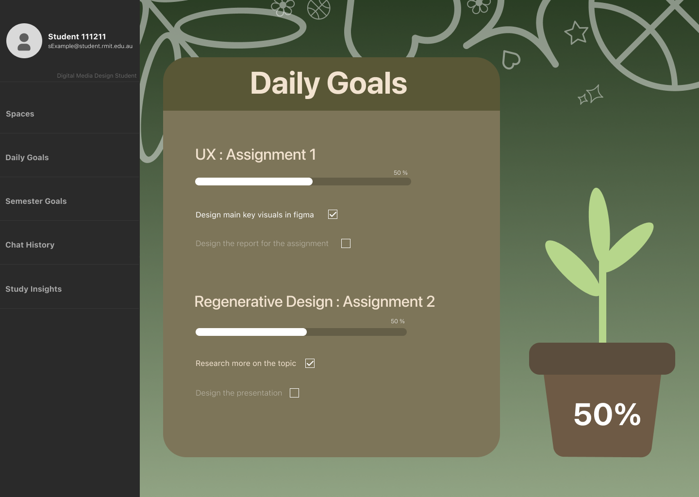
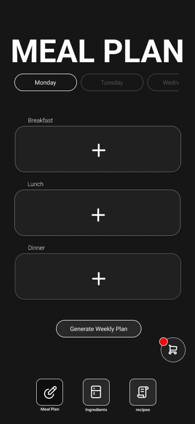
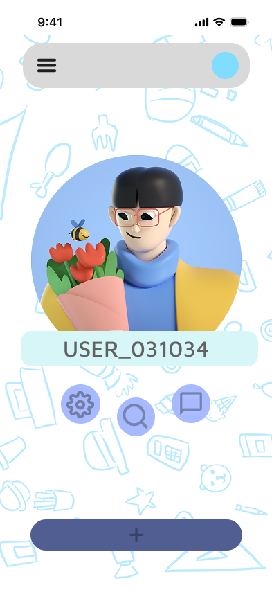

UI/UX & prototyping
User flows, wireframes and high-fidelity screens in Figma, linked into clickable prototypes. I design for real routines and test whether people can get through them without thinking twice.



Hi, I'm Gavin Vincent Subrata, a Digital Media Design student at RMIT University. I turn everyday routines like studying, cooking and speaking up into apps that are clear to use and a little bit fun to come back to.
My focus is interface and experience design for mobile and web. Branding, motion and video sit around that core, so the products I design look considered as well as working well.
User flows, wireframes and high-fidelity screens in Figma, linked into clickable prototypes. I design for real routines and test whether people can get through them without thinking twice.
Colour systems, type and illustration that give each product its own personality. I designed merchandise and brand pieces for Echoverse Band.
After Effects, Premiere Pro and VFX for storytelling, plus HTML, CSS and JavaScript so I can talk to developers in their language.
A desktop study tool, a mobile kitchen companion and a conversation app. Open a project to see the screens and the decisions behind them.
A calm home base for Digital Media students to plan their day, track assignment progress and stay connected to their cohort. Every finished task helps a plant grow, so progress feels like care instead of pressure.
Each assignment breaks into small tasks with its own progress bar. The plant mirrors your total for the day, a gentle reward instead of a streak counter.
Spaces, Daily Goals, Semester Goals, Chat History and Study Insights stay pinned on the left, so students always know where they are.
The profile opens as a modal with Profile, Cosmetics, Tags and Privacy side by side, so controlling what others see is never buried.
Basketballs, flowers and hearts in the background: a reminder that there's life outside the assignment list.
A dark-mode kitchen companion that tracks what's in your fridge, plans the week's meals and builds the shopping list for you. Pick a recipe and its key ingredients go straight into your cart.
Meat reads coral, dairy teal and vegetables green, so a long list scans at a glance. "Last bought" dates help you use food before it's wasted.
Breakfast, lunch and dinner are big tap targets for each day. One button generates a full week when you'd rather not decide.
Selecting a recipe adds its key ingredients to the shopping list, and the cart badge shows there's something new to buy.
Ayam Taliwang is a Lombok favourite. I wanted my own food culture on the menu, not just pasta.
A conversation app that makes it easier to share opinions on big topics. Anonymous handles, friendly avatars and a hand-drawn world lower the stakes so people feel safe to join in.
The first screen asks one thing, letter by letter. It sets the tone before any sign-up form appears.
Numbered handles keep identities private while 3D avatars keep the space warm and human.
Topics sit in a carousel you can swipe, with large arrow buttons as an accessible alternative. Two bubble colours separate each side of the conversation.
Hard topics, soft edges: rounded shapes and pastel blue keep heated subjects from feeling hostile.
I grew up in West Java, Indonesia, and moved to Melbourne to study Digital Media Design at RMIT. I love craftsmanship, visual storytelling and the small details that make an experience memorable.
Most of my work history is face to face with customers. Guiding clients through high-value purchases at a gold store, and looking after guests on a busy diner floor, taught me to read what people need before they say it. That's the habit I bring to UX.
Looking after guests in a fast-paced service, making sure everyone feels welcome.
UI/UX, interaction, motion, sound and visual design.
Brand and merchandise design for the band's Sagarmatha event.
Guided clients through meaningful, high-value jewellery purchases with patience and care.
I'm looking for UI/UX internships and junior design roles in Melbourne and remote. I'd love to hear about what you're building.